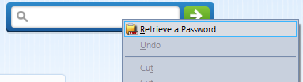
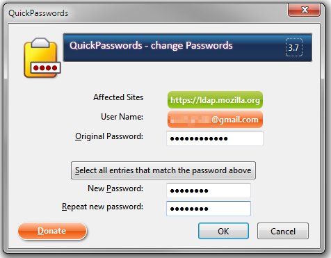

QuickPasswords :: Screenshots
Please enable Javascript for an easier way to see the following section.
Expand All
Collapse All
QuickPasswords Icon
textbox context menu

Password Manager
Password Manager Context Menu
Unified Password Change Window

Update Notification
Options
Toolbar button